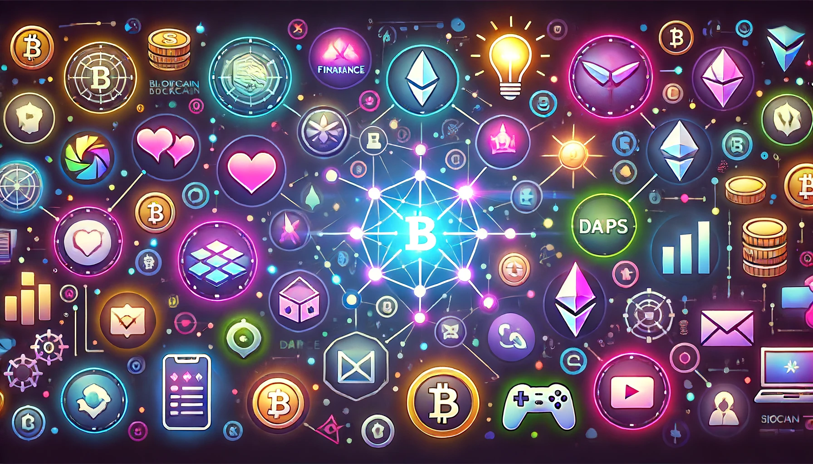
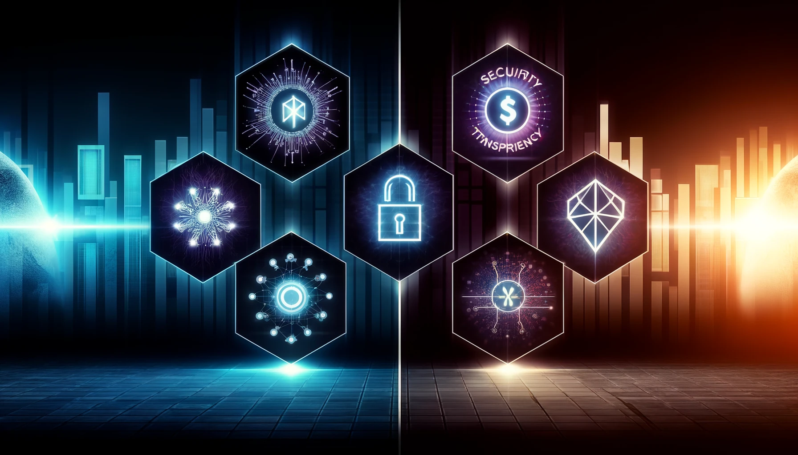
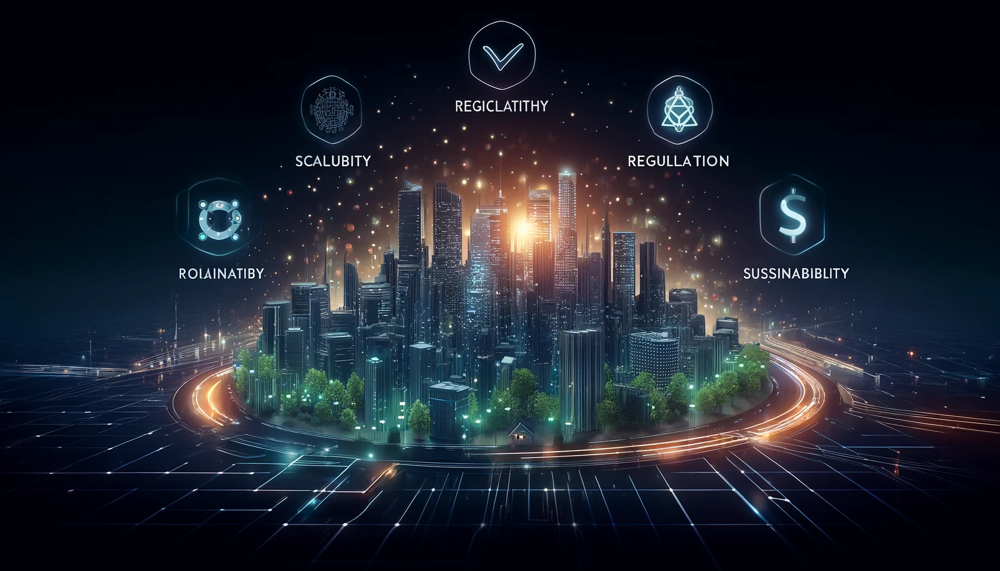
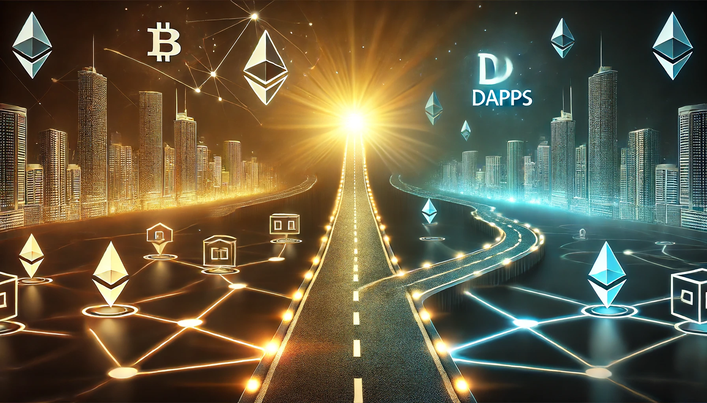

Blockchain and Decentralized Applications: Revolutionizing the Digital World
Overview
Blockchain and decentralized applications are at the forefront of the digital revolution. By enabling secure, transparent, and efficient transactions without intermediaries, these technologies are reshaping the way we conduct business, manage data, and interact online. This article delves into the core concepts of blockchain and dApps, highlighting their benefits, challenges, and future potential.
Understanding Blockchain Technology
Blockchain is a distributed ledger technology that enables secure and transparent record-keeping. Each block in the blockchain contains a list of transactions, and these blocks are linked together in a chronological chain. The decentralized nature of blockchain ensures that no single entity has control over the entire network, enhancing security and trust.
Key Components of Blockchain:
• Decentralization: Unlike traditional databases, blockchain operates on a peer-to-peer network where each participant has a copy of the ledger.
• Immutability: Once a transaction is recorded on the blockchain, it cannot be altered or deleted, ensuring the integrity of the data.
• Transparency: All transactions are visible to participants in the network, promoting accountability and trust.
How Blockchain words step by step:
1. Transaction Initiation: A user initiates a transaction, which is broadcast to the network.
2. Validation: Network nodes validate the transaction using consensus mechanisms like Proof of Work (PoW) or Proof of Stake (PoS).
3. Block Creation: Validated transactions are grouped into a block and added to the existing blockchain.
4. Recording: The new block is recorded across all nodes in the network, making the transaction immutable and transparent.

The Rise of Decentralized Applications (dApps)
Decentralized applications, or dApps, run on blockchain networks and utilize smart contracts to execute transactions and processes. Unlike traditional applications that rely on centralized servers, dApps operate on a decentralized network, offering enhanced security and resilience.
Characteristics of dApps:
• Open Source: dApps are typically open-source, allowing developers to contribute and improve the code.
• Decentralized: dApps run on a blockchain network, ensuring that no single entity controls the application.
• Token-Based: dApps often use tokens for various functions, such as transaction fees, governance, and access to services.
• Security: The decentralized nature and cryptographic principles of blockchain make it highly secure against hacking and fraud.
• Transparency: All transactions and processes are visible on the blockchain, promoting transparency and accountability.
• Efficiency: Blockchain can streamline processes by eliminating intermediaries and reducing transaction times.
• Immutability: Once recorded, data on the blockchain cannot be altered, ensuring the integrity and trustworthiness of the information.
• Decentralization: By removing central points of control, blockchain and dApps reduce the risk of single points of failure and censorship.

Use cases and Applications
Blockchain and dApps have the potential to revolutionize various industries:
Finance:
• Cryptocurrencies: Digital currencies like Bitcoin and Ethereum operate on blockchain, enabling peer-to-peer transactions without intermediaries.
• DeFi: Decentralized finance applications offer financial services like lending, borrowing, and trading without traditional banks.
Supply Chain:
• Traceability: Blockchain can track the origin and journey of products, enhancing transparency and trust in supply chains.
• Efficiency: Smart contracts can automate and streamline supply chain processes, reducing delays and costs.
Healthcare:
• Data Security: Blockchain can securely store and share patient data, ensuring privacy and accuracy.
• Transparency: Blockchain can track pharmaceuticals from production to distribution, preventing fraud and ensuring quality.
Real Estate:
• Property Transactions: Blockchain can simplify property transactions by recording ownership and transfer of properties on a secure ledger.
• Tokenization: Real estate assets can be tokenized, allowing fractional ownership and easier investment.
Voting:
• Security and Transparency: Blockchain can ensure secure, transparent, and tamper-proof voting systems, enhancing trust in electoral processes.
Challenges and Liminations
Despite their potential, blockchain and dApps face several challenges:
• Scalability: Blockchain networks can struggle with scalability, leading to slower transaction times and higher fees during peak usage.
• Regulation: The regulatory environment for blockchain and cryptocurrencies is still evolving, creating uncertainty for developers and users.
• Energy Consumption: Some blockchain consensus mechanisms, like PoW, are energy-intensive and raise environmental concerns.
• Usability: dApps can be complex and challenging for non-technical users to navigate and use effectively.

The Future of Blockchain and dApps
The future of blockchain and dApps is promising, with ongoing advancements aimed at addressing current challenges:
• Scalability Solutions: Layer 2 solutions and new consensus mechanisms like PoS aim to improve blockchain scalability and efficiency.
• Regulatory Clarity: As governments and regulatory bodies develop clearer frameworks, the adoption of blockchain and dApps is likely to increase.
• Sustainability: Efforts to create more energy-efficient blockchain technologies are underway, addressing environmental concerns.
• Adoption and Integration: As more industries recognize the benefits of blockchain, integration with existing systems and broader adoption are expected to grow.

Conclusion
Blockchain and decentralized applications represent a significant shift towards a more secure, transparent, and efficient digital world. While challenges remain, the potential benefits of these technologies are immense, promising to revolutionize various industries and improve how we conduct transactions, manage data, and interact online. As blockchain and dApps continue to evolve, they are poised to play a crucial role in shaping the future of technology and society.